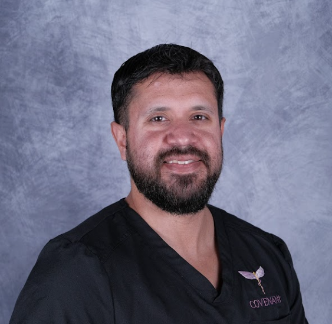

Resume Highlights
Professional Summary
Analytical and detail-oriented professional with experience in data management, system development, and reporting workflows across healthcare, financial services, and IT environments. Skilled in analyzing structured data, validating data integrity, and supporting system implementations to improve operational performance and reporting accuracy.

Current Role: eSource Developer at Covenant Metabolic Specialists
Focus: Data management, source building, system development, and reporting workflows
Tools: Python, SQL, Tableau, Excel, CTMS, EHR workflows
Experience
Covenant Metabolic Specialists — eSource Developer (2025 - Present)
- Develop and maintain electronic source (eSource) systems for clinical research.
- Lead CTMS testing and validation to ensure accurate functionality and data flow.
- Map and support integrations between eSource, CTMS, and EHR platforms.
- Analyze study outputs in Excel and internal reporting tools to validate data integrity.
- Create validation rules, audit trails, and documentation for compliance.
- Train research personnel on workflows and system usage.
Wells Fargo Home Mortgage — Home Mortgage Consultant (2021 - 2023)
- Analyzed client and financial data for mortgage origination and risk evaluation.
- Used Excel to organize financial records, track pipelines, and support reporting.
- Improved digital workflow and documentation accuracy with operations teams.
- Explained complex mortgage processes clearly to clients.
- Managed high-volume documentation while maintaining compliance standards.
Perspecta (DoD Contractor) — Help Desk Analyst (2019 - 2021)
- Supported 200+ enterprise software systems in a government environment.
- Analyzed ticket trends to identify recurring issues and process improvements.
- Documented issues and resolutions in knowledge systems.
- Collaborated with development and compliance teams to resolve technical problems.
- Communicated technical issues clearly to non-technical stakeholders.
Education & Certifications
University of Texas at San Antonio — B.A. Economics
University of Texas at San Antonio — Certification in Data Science and Analytics — 2023
Rackspace IT Cloud Academy — Linux IT Administration Certification — 2018
Technical Skills
- Python
- SQL
- Tableau
- Relational Databases
- Data Visualization
- Data Integrity Validation
- eSource Systems
- CTMS
- EHR Workflows
- QA Testing
- Excel / Microsoft 365
- Workflow Analysis